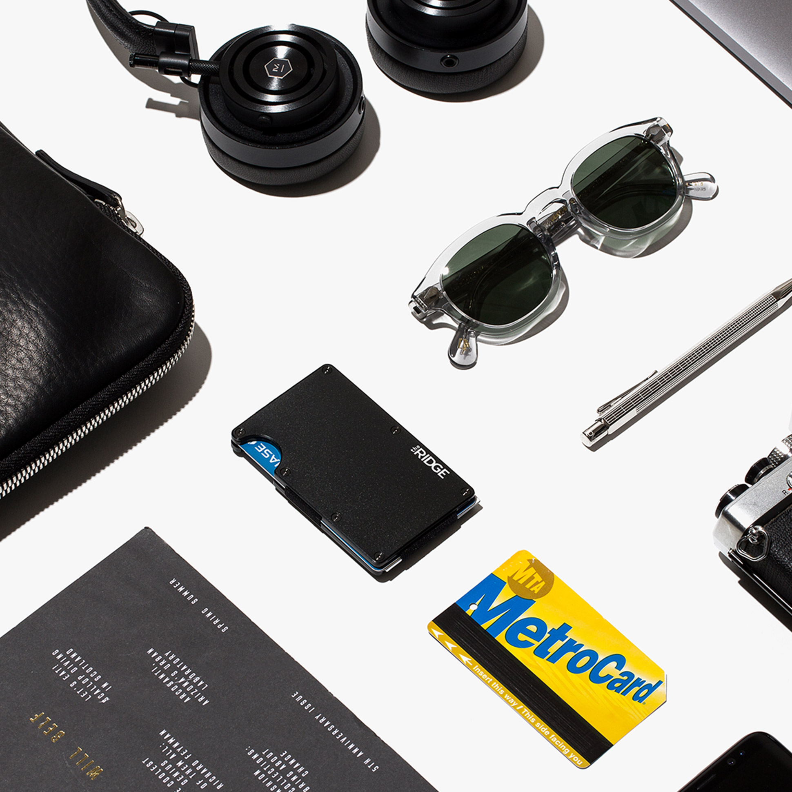

Owning your creativity — What I’ve learnt working in agencies and in-house.
Source: Medium Article
Note: These are my experiences in a very short, junior career. I’m a loud-mouth kid and I’m probably chatting shit. But this is what I saw and this is what I thought. Take it with the largest pinch of salt you’ve got.
A question often asked by designers/developers/whoever is ‘What’s the best? In-house or Agency?’. The answer, like a lot of answers worth knowing, is ‘it depends’. I’ve worked for a time in both, each with their own strengths and weaknesses. It comes down to what you want as a designer.
The basic differences between ‘in-house’ and agencies are discussed often. Altogether, the differences depend on what agency you’re coming from and what in-house team you’re going to — or vice versa. Generally speaking, in an agency environment you’re working on various projects with varying different brands, companies and people. In-house, you’re working on one. The very fact of whether you take that as pro-agency, or pro-in-house highlights perfectly what I mean about ‘it depends’. In a nutshell, agencies sell design as their product to businesses. In-house teams are part of a company, like finance, HR, maintenance and sales to sell products to businesses/consumers.
I’m a digital designer, who works on websites and web apps. Even thought I only left university almost over 3 years ago, It feels like forever since I was a ‘graduate’. It’s almost cliche to say, but you don’t learn design until you go work somewhere. Any working designer will tell you — it’s almost criminal that you don’t get this experience in university; but that’s another conversation for another blog post.
I only ever worked in agencies up until last March when I joined a large retail brand’s in-house design team. My agency experience has been invaluable. From the great ones, to the not so great ones. You learn as much about what not to do as what to do, when working with actual clients. The main benefit of an agency environment is that you are your agencies product in essence. As a designer/developer/whoever, clients come to your agency for you. The work you make is the main financial driver of that business. It’s a very powerful thing — but comes with responsibility. You have to work hard, and work fast. I learnt more than I can imagine but, it was intense and high-pressured. Luckily I’m a cocky little shit, and I learn quick and don’t mind getting stuck in and having a go. If you thrive under pressure and don’t mind getting it wrong once in a while; you’ll go far at an agency kid.
With all that said, why did I decide to work in-house? Location change and a pretty young girl were involved but a huge reason was ‘owning my creativity’. Agencies are a magical place but they are somewhat an extension of design school. You’ve surrounded by creative people, the safe space of the arty-kids. Your boss is most likely a designer who cut her teeth on brands you could only dream of working on. They will direct and shape your work to where it needs to be. You all circle-jerk over the latest case study you’ve put out. You sell dreams to your clients for the highest price your can. The last agency I worked at did amazing work but was I flourishing as designer? Visually, most certainly. In a more holistic sense — not quite. All said and done, you’re there to sell design. Best for their company? Maybe not. Future proof? Probably not. What they asked for? Yes sir’ee.
I found that what I wanted from design — to improve and create better experiences and products for people, was at the whim of the clients we had. With any agency, you’re working for a client. That means your ideation and ownership of the creativity produced is limited. Not only is it limited by your client, but by the very nature of your business — it’s out the door and it’s gone. Not many times are you going to have an on-going ideation of your client work. If you are, they should hire themselves a team. You’re not going to have ownership of what you put out there. You’ve sold it and it’s there’s to do what they want with. Whether it performs or not, is up to them and the gods.
Working within a company, your ‘clients’ for want of a better word are your users. Your customers. As a designer, you’re the biggest advocate for those people. Your voice will be heard if you can prove this will be easier for people use, attract more customers, increase conversions etc. The data-driven methodology behind the design is essential as the visual execution of what your doing is almost the by-product of your design. If you’ve got a great idea how sales can increase leads — you can go to sales and work with them. You’re part of the company and your working towards a common goal.
My time in agencies was spent in ‘client relations’ (in non-business speak — that’s explaining shit to people). Since I’ve moved in-house, the person I have to sell to is sat opposite me or in the next room. They understand our brand, our processes and how we can help our customers. If this idea doesn’t work, we toss it in the rubbish heap and move on to something else. You work within a team that’s dedicated to solving one goal, the room for increasing a businesses overall efficiency and growth is your problem, as much as it is finance’s, HR’s and sale’s. You’ve taken your design from a commodity to a critical asset, with measurable metrics and increased resources. In my eyes, that should be the essence of what design is. Not only pretty pictures and logos.
Obviously it’s not always this rosy — the challenge for in-house teams as far as I see it, is to bring some of that agency spark and creativity in. It’s easy to get complacent within a company, especially a large one. Tradition often overrules innovation. But to any designer who thrives on a challenge, you’ve got a seat at the table of huge company and it’s up to you to prove why design and creativity matters to your company. Forging a productive and creative design culture at larger companies is essential and it’s something I’m trying to learn how to do fast. I don’t see why that freshness and creative culture can’t thrive at in-house companies. Creativity works for everyone.
It’s been said that agencies are dead but it’s not all that glum. Creative consultancy is a key aspect of running any business and having a fresh perspective can only ever be a good thing. It’s important for the two to work together; both using their strengths to inspire and the weaknesses to learn from one another.
If you’re a design student or a designer wondering to choose, both experiences are invaluable. But, like anything, it depends who you work for and how much work you want to put in.
http://heymynameisrob.github.io
Written with creatives of all types and backgrounds in mind, The Perfect Grid covers the crucial aspects of the self-promotion process in six easy and actionable chapters: Get Inspired, Find Your Audience, Create Great Content, Develop Your Style, Build Effective Habits and Grow Your Audience.
Learn how to:
- — Document and share your creative work and lifestyle
- — Build an authentic personal brand online
- — Connect with likeminded designers
We believe that using an approach such as experience design can redefine how business and design work together to create value in more efficient ways that also help business be more nimble and proactive in negotiating change.